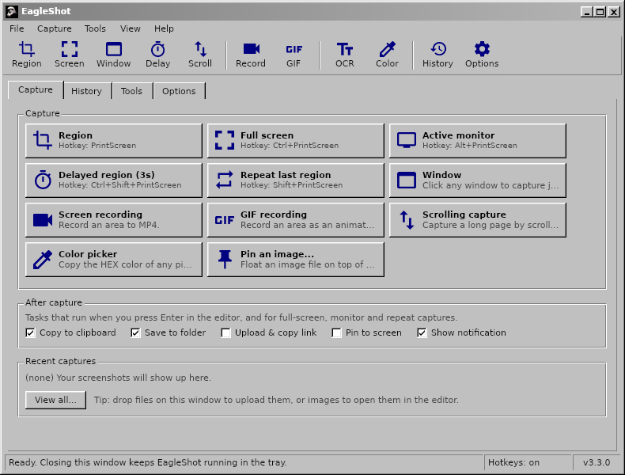
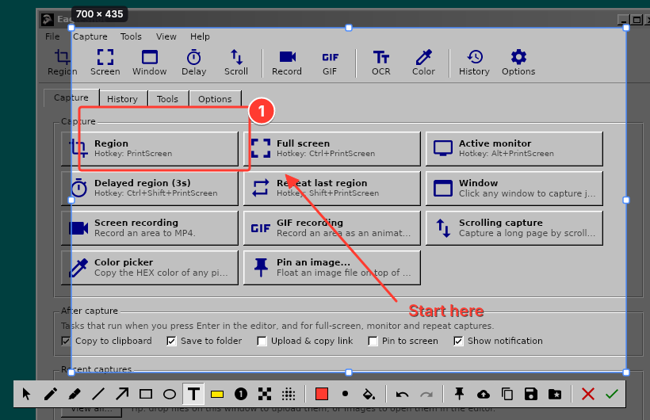
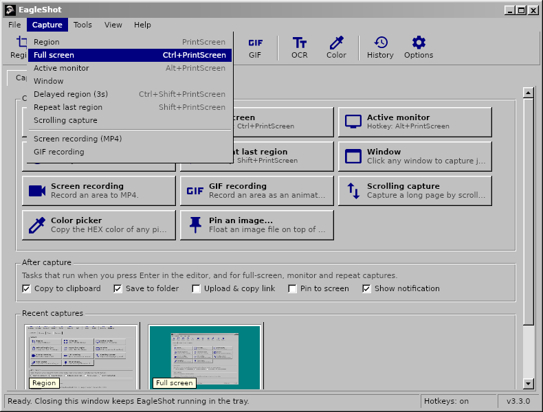
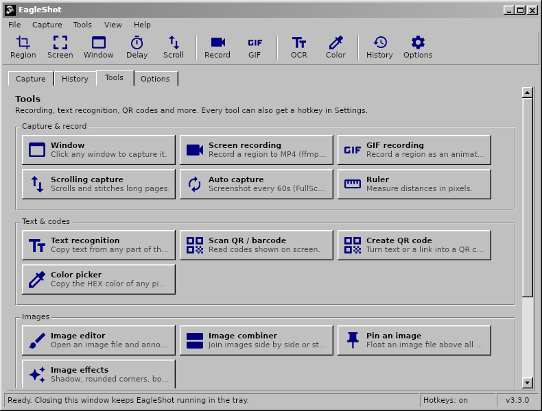
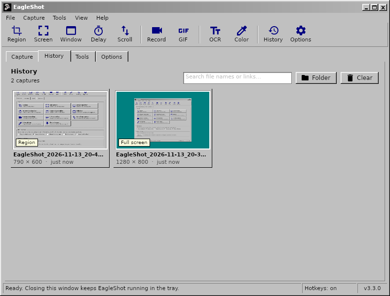
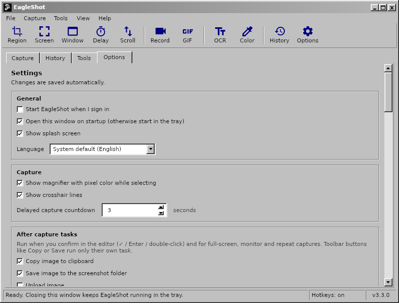
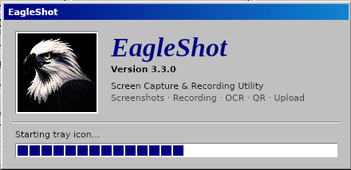
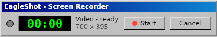
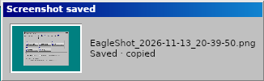
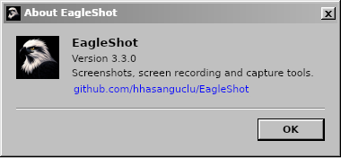

EagleShot
Screenshots, screen recording and capture tools. Free and open source.
Press PrintScreen, select an area, annotate it and copy, save, pin or upload it. Record the screen to MP4 or GIF, grab long scrolling pages, read text with OCR and scan QR codes. It is like ShareX and Lightshot, in a familiar retro interface, on Windows, macOS and Linux.










EagleShot starts in your system language. You can change it any time under Options → General → Language.
Welcome to the EagleShot Setup Wizard
Choose your system below. Downloads come straight from GitHub Releases.
Installing on Windows
- Run
EagleShot_Setup_…_win-x64.exeand follow the steps. - Keep “Use the PrintScreen key for EagleShot” checked so PrintScreen opens EagleShot instead of the Snipping Tool.
- If Windows SmartScreen warns you, click More info → Run anyway (the app isn't code-signed).
Installing on macOS
- Open the
.dmgand drag EagleShot to Applications. - First launch: right-click EagleShot → Open. On macOS 15 and later use System Settings → Privacy & Security → Open Anyway.
- Allow Screen Recording and Accessibility (for hotkeys).
- If macOS says the app is “damaged”:
xattr -cr /Applications/EagleShot.app
Installing on Linux
- Extract the archive:
tar xzf EagleShot_…_linux-x64.tar.gz - Run
./installers/linux/install.shinside the extracted folder. - Optional:
xcliporwl-clipboardfor the clipboard,ffmpegfor recording,tesseract-ocrfor OCR.
| Keys | Action |
|---|---|
PrintScreen (F12 on macOS) | Capture region |
Ctrl+PrintScreen | Capture full screen |
Alt+PrintScreen | Capture active monitor |
Shift+PrintScreen | Repeat last region |
Ctrl+Shift+PrintScreen | Delayed region capture |
Ctrl+Shift+K | Color picker |
Enter / Ctrl+C / Ctrl+S | In the editor: done, copy, save |
EagleShot
Version 3.3.0
EagleShot is a free, open-source screenshot and screen recording tool for Windows, macOS and Linux. It pairs the speed of Lightshot with a ShareX-style workflow: capture modes, an annotation editor, after-capture tasks, uploads, history and pinned screenshots, in a classic Windows 9x/2000-style interface.
Built with .NET 9 and Avalonia UI. Released under the MIT License.